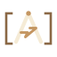

01 · History Brush
Klasik kırmızı Mustang Mach 1 fotoğrafında arka plan siyah-beyaza dönüştürülüp araç Photoshop History Brush aracıyla seçici olarak renklendirildi.
- Photoshop
- History Brush
- Seçici Renk

Ali Efe Kalinci03 — Projeler
Grafik Animasyon I dersinde yaptığım çalışmalar, yazılım projelerim ve sahada yer aldığım elektrik işleri.
Klasik kırmızı Mustang Mach 1 fotoğrafında arka plan siyah-beyaza dönüştürülüp araç Photoshop History Brush aracıyla seçici olarak renklendirildi.
Chrono Master otomatik saat için stüdyo degrade zemin, ayna yansıması, yumuşak gölge ve tipografik ürün tanıtım afişi tasarlandı.
Siyah-beyaz samuray karakalem çizimi katmanlı boyama, kızıl zırh vurguları, gölgelendirme ve kumaş tonlamalarıyla dijital olarak renklendirildi.
Kapadokya gün doğumu manzarasına bağlı Smart Object katmanlarıyla 7 sıcak hava balonu yerleştirilip tek kaynak üzerinden eşzamanlı düzenlendi.
30 ardışık gece trafik fotoğrafı Smart Object Image Stack moduyla birleştirilerek sağ şeritteki hareketli araçlar temizlendi ve akıcı ışık izleri elde edildi.
Türk Hava Yolları (turkishairlines.com) ana sayfası eskizden başlayarak 3 tasarım varyasyonu ve Layer Comps yapısıyla Photoshop'ta sıfırdan tasarlandı.
2026
Fiber optik tünel, Blender'da modellenip Three.js ile canlı çizilen 3B Hakkımda sahnesi ve kaydırmaya bağlı animasyonlar içeren kişisel sitem.
2026
Tam otomatik kümeste kablo çekimi ve elektrik tesisatı; kümes ofisinin inşaat sürecindeki tesisat uygulamaları.
2025
Doğalgaz basınç düşürme ve ölçüm istasyonunda pano bağlantıları, saha kablolaması ve projektör montajı.